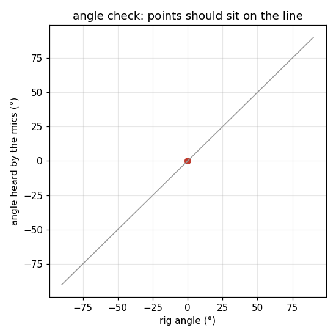

2 tests. Angles: [0]. Distances: [60]. Environments: ['quiet'].
Best so far: raw_center (score None). See the scoring notes at the bottom.
| path | score | side_rejection | di_estimate | snr_front | snr_side_mean | front_level | angles |
|---|---|---|---|---|---|---|---|
| raw_center | 12.07 | -27.55 | 1 | ||||
| raw_left | 12.07 | -27.55 | 1 | ||||
| raw_right | 12.06 | -27.55 | 1 | ||||
| lr_mix | 14.29 | -27.72 | 1 | ||||
| das | 13.81 | -27.7 | 1 | ||||
| das_c1 | 13.8 | -27.99 | 1 | ||||
| das_c2 | 13.85 | -28.15 | 1 | ||||
| das_auto | 13.8 | -27.99 | 1 | ||||
| gsc_nlms | 17.94 | -27.81 | 1 | ||||
| gsc_auto | 17.9 | -28.1 | 1 | ||||
| gsc | 18.23 | -27.88 | 1 | ||||
| diff_lr | 0.9 | -41.78 | 1 |

| run | angle | dist | env | heard at | warnings |
|---|---|---|---|---|---|
| 2026-10-27_132741_angle000_distance060cm_quiet_rep1 | 0 | 60 | quiet | +0° | |
| 2026-10-27_132749_angle000_distance060cm_quiet_rep2 | 0 | 60 | quiet | +0° |
(all dB, computed on the same recordings):
front_level noise level at 0°
side_rejection front level minus the mean level at |angle| >= 45° (higher is better)
di_estimate directivity index from the polar (higher is better)
snr_front speech SNR at 0° (higher is better)
snr_side_mean mean speech SNR at |angle| >= 45° (LOWER is better:
a talker at the side
should not get through)
score side_rejection + (snr_front - snr_side_mean)